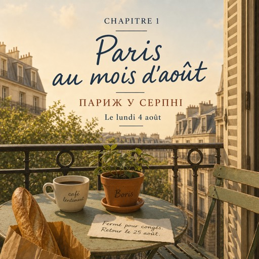

Le lundi 4 août — понеділок, 4 серпня
Ce matin, il n'y a pas de réveil.
Цього ранку немає будильника.
Natalia ouvre les yeux à sept heures.
Наталя розплющує очі о сьомій.
Elle reste au lit deux minutes, puis elle se lève, parce qu'elle ne sait pas quoi faire d'autre.
Вона лежить дві хвилини, потім встає — бо не знає, що ще робити.
Dans la cuisine, elle prépare un café.
На кухні вона робить каву.
Elle sort sur le balcon.
Виходить на балкон.
Le balcon est petit : il y a de la place pour une chaise et pour une plante.
Балкон маленький: там є місце для стільця і для рослини.
La plante s'appelle Boris.
Рослину звати Борис.
Dans la cour, il y a un grand platane.
У дворі росте великий платан.
Le matin, à Montreuil, la cour est calme.
Уранці в Монтреї двір тихий.
Une fenêtre s'ouvre. Un enfant rit.
Відчиняється вікно. Сміється дитина.
Quelqu'un écoute la radio, très bas.
Хтось слухає радіо, зовсім тихо.
Natalia boit son café lentement.
Наталя п'є каву повільно.
Depuis le quinze juillet, elle n'est plus pressée.
Із п'ятнадцятого липня їй нікуди поспішати.
Le bureau est fermé. Le travail est fini.
Контора зачинена. Робота скінчилася.
À dix heures, elle descend.
О десятій вона спускається.
La rue est vide.
Вулиця порожня.
La moitié des boutiques sont fermées.
Половина крамниць зачинена.
Sur les portes, il y a des petits papiers : « Fermé pour congés. Retour le 25 août. »
На дверях висять папірці: «Зачинено на відпустку. Повернення 25 серпня».
La boulangerie est ouverte. Le tabac est ouvert.
Булочна відчинена. Тютюнова крамниця відчинена.
Le reste dort.
Решта спить.
Paris au mois d'août, c'est une ville sans les Parisiens.
Париж у серпні — це місто без парижан.
Elle achète du pain. La boulangère sourit.
Вона купує хліб. Продавчиня усміхається.
— Bonjour ! Il fait beau aujourd'hui.
— Доброго дня! Сьогодні гарна погода.
— Oui, dit Natalia. Il fait beau.
— Так, каже Наталя. Гарна погода.
Elle voudrait dire autre chose.
Вона хотіла б сказати щось інше.
Quelque chose de simple, sur le mois d'août, sur les vacances, sur la chaleur.
Щось просте — про серпень, про відпустки, про спеку.
Mais elle dit seulement « merci, au revoir », et elle sort.
Але вона каже лише «дякую, до побачення» — і виходить.
Dans l'escalier, elle compte.
На сходах вона рахує.
Elle est en France depuis quatre ans.
Вона у Франції вже чотири роки.
Quatre ans, c'est presque mille cinq cents jours.
Чотири роки — це майже півтори тисячі днів.
Et aujourd'hui, à la boulangerie, elle dit seulement : « Il fait beau. »
А сьогодні в булочній вона сказала тільки: «Гарна погода».
Chez elle, elle prend une feuille et un stylo.
Удома вона бере аркуш і ручку.
Elle écrit trois choses.
Пише три речі.
Un : cours de français.
Перше: курси французької.
Deux : travail.
Друге: робота.
Trois : parler. Tous les jours. Avec des gens.
Третє: говорити. Щодня. З людьми.
Elle regarde la liste longtemps.
Вона довго дивиться на список.
Puis elle la met sur le frigo, avec un aimant en forme de tour Eiffel.
Потім вішає його на холодильник магнітиком у формі Ейфелевої вежі.
Dehors, le platane ne bouge pas.
Надворі платан не ворухнеться.
C'est le mois d'août, et à Paris, il n'y a personne.
Це серпень, і в Парижі нікого немає.